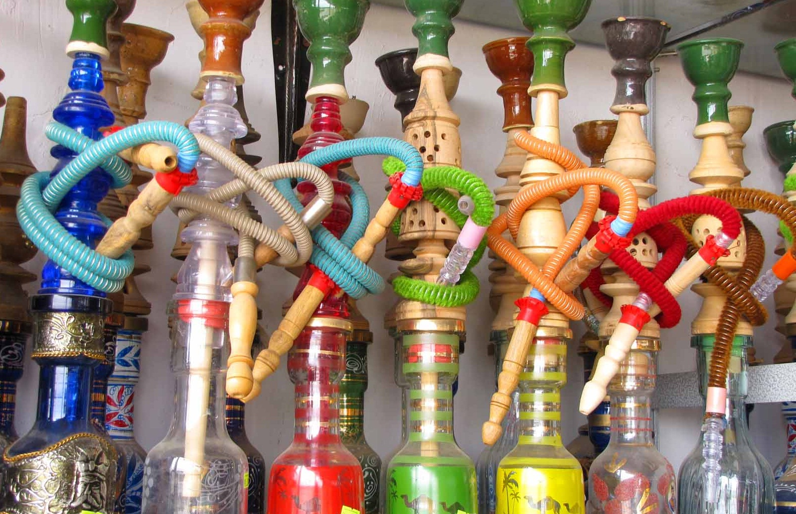

ضد و نقیض های قلیانی/ قلیان کشیدن یا نکشیدن؟! مسئله این است
اظهارات و بخشنامه های مسئولان برای ممنوعیت قلیان هر از چند گاهی مطرح می شود و دامنه بحث ها داغ می شود. اما آنچه که می ماند، داغی ذغال های قلیان ها در سطح شهر است. چرا که ممنوعیت عرضه قلیان به سریالی تبدیل شده است که روزی ممنوع می شود و روز دیگر خبری از بخش نامه ها و اظهارات برخورد آمیز ناجا نیست! قلیان را با وجود ضررهایی که برای سلامتی دارد، بسیاری نمادی از فرهنگ و تاریخ گذشته ایران میدانند. این روزها اما پای قلیان به صحن مجلس باز شده است و حرف حدیثها درباره ممنوعیت قلیان دوباره داغ شده است. هرچند این حرف و حدیثها تازه نیست. یک روز استفاده از قلیان ممنوع و روز دیگر آزاد!!! هنوز از یادها نرفته است که در دولت محمود احمدی نژاد، یک روز استفاده از قلیان ممنوع میشد و نیرویانتظامی خودش را آماده برخورد و پلمپ قهوهخانههای متخلف و شکست قلیانها میکرد و یک روز دوباره رئیس جمهور خبر از بازگشایی قهوه خانه ها می داد و اعلام میکرد قلیان آزاد است و مشکلی برای ارایه قلیان وجود ندارد. یک روز، وزارت بهداشت، قانون جامع کنترل و مبارزه ملی با دخانیات را با نظر دیوان عدالت اداری اجرایی میکرد وروز دیگر هیات وزیران - که وزیر بهداشت هم در آن حضور دارد - آن را نقض میکرد و قهوهخانه را از شمول اماکن عمومی خارج میکرد و اعلام می کرد میتوان در این اماکن قلیان عرضه کرد! قلیان جمع شدنی است؟ ممنوعیت استفاده از قلیان، روند پر پیچ و خمی داشته است. در سال 71 جمعیت مبارزه با استعمال دخانیات، ممنوعیت استعمال قلیان را به هیات وزیران، ریاست جمهوری و مجلس ارائه داد که از این سال تا سال 76 مصوبه مجموعه هیات دولت و مجمع تشخیص مصلحت نظام قرار گرفت و براساس آن استعمال سیگار و مواد دخانی در اماکن عمومی ممنوع اعلام شد. با این حال، ورق چندبار برگشت و قلیان دوباره بر میزهای قهوه خانه ها جا خوش کرد. در سال 1383 باز مصرف قلیان در اماکن عمومی کشور ممنوع شد. ولی این ممنوعیت ادامه نداشت و در سال 1384 با اصلاح تبصره ماده1 آیین نامه ممنوعیت استعمال و عرضه سیگار و سایر مواد دخانی در اماکن عمومی، قهوه خانه ها و رستوران های سنتی مجاز به عرضه سیگار و مواد دخانی شدند. اما به فاصله کمتر از یک سال، ورق باز هم برگشت! قلیان ها دوباره شکسته شدند! در همین مدت، هربار زمزمه های آزاد شدن مصرف قلیان به گوش می رسید، وزارت بهداشت به اشکال مختلف سعی در مقابله با این ایده ها می کرد. تا سال 1386 که زور وزارت بهداشت به سایر سازمان های مخالف ممنوعیت قلیان چربید و دوباره بحث ممنوعیت قلیان مطرح شد. اما فروردین ماه 1388 بود که بهزاد ولی زاده، کارشناس دبیرخانه کشوری کنترل دخانیات وزارت بهداشت از اجرای مجدد طرح جمع آوری قلیان ها از قهوه خانه ها و سفره خانه های سنتی خبر داد و گفت: دور جدید این طرح در آینده نزدیک با جدیت بیشتری دنبال خواهد شد. پس از آن چهاردهم آبان سال 1390، وزارت بهداشت اعلام کرد که بر اساس ابلاغ جدید دیوان عدالت اداری، نامه وزارت کشور در سال ۸۶ مبنی بر اینکه استفاده از قلیان در قهوهخانهها مجاز است و فرماندهی انتظامی فقط از ارایه قلیان با تنباکوهای اسانسدار در قهوهخانهها جلوگیری کند، غیرقانونی است و در واقع می توان گفت این سریال همچنان ادامه داشت. هیأت دولت با عرضه قلیان موافقت کرد/ممنوعیت قلیان برای خانمها اردیبهشت ماه 93 بود که یوسف بریمانی رئیس اتحادیه ی قهوه خانه داران ساری، بزرگ ترین مشکل این اتحادیه را تداخل صنفی برخی صنوف برشمرد و خاطرنشان کرد: عرضه قلیان تنها از واحدهای کسبی صنف قهوه خانه داران مجاز است اما متأسفانه بسیاری از واحدهای صنفی دیگر، نظیر اتحادیه چلوکبابی داران، به جهت سودجویی مبادرت به عرضه قلیان می کنند. بریمانی در بخش دیگری از سخنانش یادآور شد: بسیاری از مردم تصور می کنند که عرضه قلیان از سوی قهوه خانه ها ممنوع است اما برابر مصوبه هیأت دولت در سال 89، عرضه قلیان ممنوعیت قانونی ندارد. در این بین، خرداد ماه سال گذشته، عضو هیات رئیسه کمیسیون اجتماعی مجلس، با مثبت ارزیابی کردن مصوبه دیوان عدالت اداری مبنی بر ممنوعیت عرضه قلیان در اماکن عمومی، گفت: نیروی انتظامی و وزارت بهداشت مکلفند در راستای تامین سلامت جامعه با متخلفانی که حکم دیوان عدالت اداری مبنی بر ممنوعیت عرضه قلیان در اماکن عمومی را لغو میکنند، برخورد کند. فرج الله عارفی با یادآوری مصوبه دیوان عدالت اداری مبنی بر ممنوعیت عرضه قلیان در اماکن عمومی و قهوهخانهها، گفت: با این مصوبه دستگاههای مسئول باید هر چه سریع تر نسبت به پلمپ اماکن عرضه کننده دخانیات و قلیان اقدام کنند. نماینده مردم جیرفت و عنبرآباد در مجلس شورای اسلامی، با بیان اینکه وزارت بهداشت، درمان و آموزش پزشکی و همچنین نیروی انتظامی مسئول برخورد با عرضهکنندگان قلیان در اماکن عمومی هستند، افزود: نیروی انتظامی و وزارت بهداشت موظف و مکلف هستند در راستای تامین سلامت جامعه با متخلفانی که حکم دیوان عدالت اداری مبنی بر ممنوعیت عرضه قلیان در اماکن عمومی را لغو میکنند، برخورد کند.